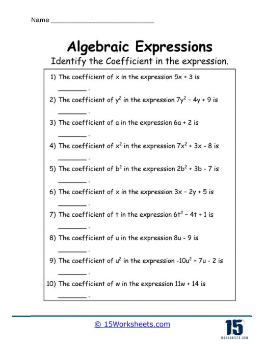
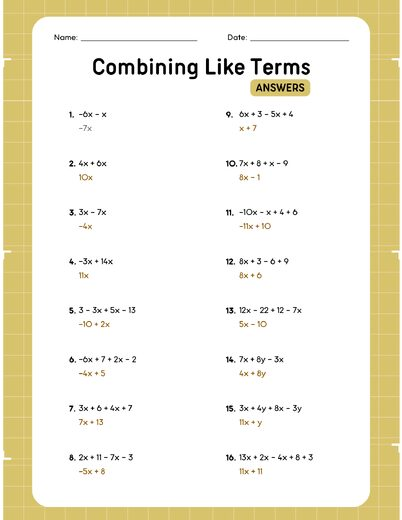
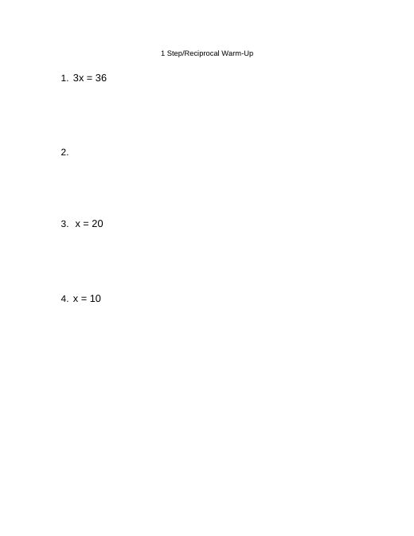

Grace Dittman
Student Teaching Portfolio
Block 2 Math
Block 3 Math
ESS
Lesson Plans
Résumé
Search
Home
›
Block 3 Math
›
Week 6
›
Activities
Activities
Lesson Plan →
Files in this folder
Two-Step Equations Warm-Up
2 Step Equation Warm-Up.docx

Identify the Coefficient
Algebraic Expressions Worksheet.pdf

Combining Like Terms Practice (Answer Key)
Combining Like Terms Key.png
Combining Like Terms Practice
Combining Like Terms.png
Two-Step Equations Warm-Up (Week 6)
Week 6 2 Step Equation Warm-Up.docx
1 Step
· 1 file

Reciprocal Warm Up
Reciprocal Warm Up.docx
Lesson Plan →